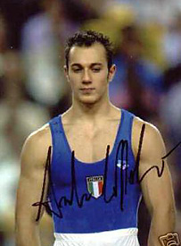

Andrea Coppolino (ITA)
2005 European R Champion
2001 and 2003 World R Bronze Medalist

Medal Total
World Championships: 2
Bronze
European Championships: 1 Gold
Andrea was born on August 19, 1979, in Cantu.
Competition Results
1997
Intl. Junior Championships: 14th AA, 1st R
1998
ITA Championships: 10th AA
1999
DTB Cup: 4th R
Swiss Cup: 6th R
World Championships: 5th R
2000
Cottbus International: 4th A
ESP-ITA-SUI: 5th AA
Gander Memorial: 9th AA
ITA Championships: 5th AA
World Cup: 7th R
2001
Cottbus International: 3rd R
Mediterranean Games: 2nd R
World Championships: 3rd R
2002
DTB Cup: 2nd R
European Championships: 4th R
French International: 2nd R
World Championships: 6th R
2003
DTB Cup: 3rd R
French International: 2nd R
World Championships: 3rd R
2005
European Championships: 1st R
This page was created on November
05, 2005.
© Gymn Forum